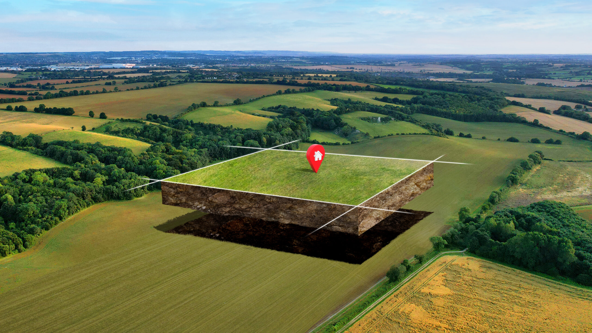
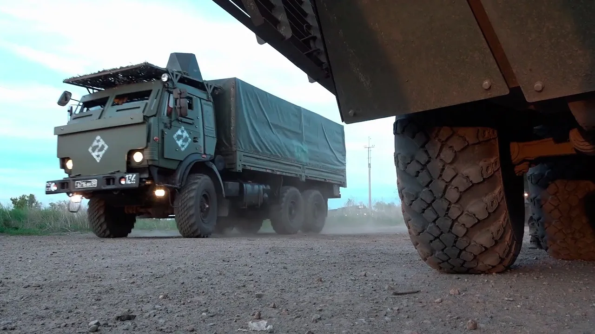
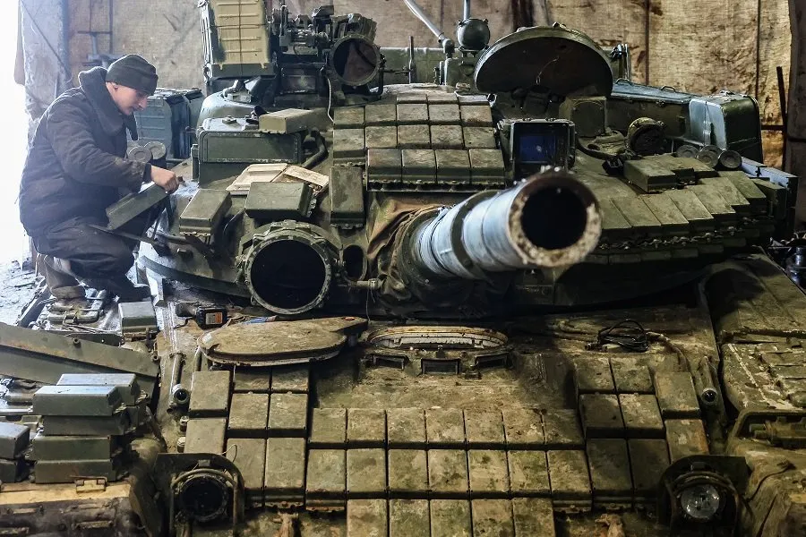

Служба по контракту
Заключить контракт на СВО с Министерством Обороны. Полное сопровождение до отправки в воинскую часть.
Бесплатный по России8 (800) 333-19-08Короткий номер*1450Служба по контракту
Заключить контракт на СВО с Министерством Обороны. Полное сопровождение до отправки в воинскую часть.
2 300 000 ₽
Единовременная выплата
210 000 ₽
Ежемесячное довольствие
50 000 ₽
Надбавка от Москвы
10 000 000 ₽
Списание задолженности
* Выплаты указаны для г. Москва. Суммы могут отличаться в зависимости от региона.
Контракт с Минобороны на СВО
Контракт на СВО с Министерством обороны — официальный документ о прохождении военной службы по контракту в Вооружённых Силах Российской Федерации.
Служба по контракту — добровольная служба в ВС РФ на основании подписанного контракта с фиксированным сроком и условиями.
При подписании контракта гражданин получает статус военнослужащего, полный социальный пакет и денежное довольствие.
Сравнение: контракт МО и добровольцы
Контракт с МО РФ (ФЗ-53)
- Полный статус военнослужащего ВС РФ
- Сроки: 1 год, 3 года, 5 лет
- Федеральная выплата 400 000 ₽ + региональная
- Карьерный рост, отпуск, военная ипотека
Добровольческий контракт (ФЗ-61)
- Другой юридический статус — не военнослужащий
- Сроки: от 6 месяцев
- Нет федеральной выплаты 400 000 ₽
- Довольствие от 100 000 ₽/мес, статус ВБД — да
Кто может подписать контракт
Мужчины без инвалидности
Возраст от 18 до 64 лет. Годные по состоянию здоровья — категории «А», «Б» или «В» по результатам медкомиссии.
Иностранные граждане
Граждане стран СНГ и ближнего зарубежья, владеющие русским языком, от 18 до 30 лет. Оформление на территории РФ.
Граждане с судимостью
При погашенной или снятой судимости. В том числе лица, находящиеся под следствием — в ряде случаев по решению суда.
Сравнение контрактов: МО РФ и Добровольцы
Контракт с МО (ФЗ-53) и добровольческий контракт (ФЗ-61) — разные документы с разным статусом и условиями.
Добровольцы (ФЗ-61)
от 6 месяцев
1 год (МО РФ)
ФЗ-53
3 года (МО РФ)
ФЗ-53
5 лет (МО РФ)
ФЗ-53
Подробности по каждому сроку уточним при консультации.
Как стать военнослужащим по контракту
Заявка и консультация
Оставьте заявку на сайте или позвоните. Специалист уточняет данные, отвечает на вопросы, объясняет условия и выплаты.
Подготовка документов
Предоставляем список документов и пошаговую инструкцию. Поможем собрать пакет без ошибок, организуем трансфер к месту оформления.
Медкомиссия и контракт
Проходите медкомиссию. При подтверждении годности оформляется и подписывается контракт с Министерством обороны РФ.
Отправка в учебный центр
После заключения контракта направляетесь в учебный центр для подготовки по выбранной специальности.
Обучение и подготовка
Перед отправкой каждый контрактник проходит курс боевой подготовки на базах Министерства Обороны. Денежное довольствие начисляется с первого дня зачисления.
Общевойсковая подготовка
Основы воинских уставов, строевая и физическая подготовка, работа в составе подразделения. Базовый курс — от 14 дней.
Огневая подготовка
Стрельба из автомата, пулемёта, гранатомёта. Метание гранат, обращение с боеприпасами и средствами индивидуальной защиты.
Тактическая подготовка
Ориентирование на местности, действия в наступлении и обороне, поражение техники. Учения в условиях, приближённых к боевым.
Тактическая медицина
Первая помощь при ранениях, остановка кровотечений, наложение жгута, эвакуация раненых. Навыки, которые спасают жизни.
Специальная подготовка
Профильное обучение по ВУС: связь, инженерное дело, вождение техники, БПЛА и другие направления. Сроки зависят от специальности.
Боевое слаживание
Отработка действий в составе подразделения. Тактические учения в условиях, максимально приближённых к реальным боевым.
Сроки подготовки зависят от ВУС. Подробности уточним при консультации.
Питание и вещевое обеспечение
Военнослужащие по контракту полностью обеспечиваются питанием, формой и снаряжением за счёт Минобороны.
Питание
Трёхразовое горячее питание или полевой паёк. В зоне СВО — усиленный рацион. Всё за счёт государства.
Форма и обмундирование
Полный комплект формы по сезону: летняя, зимняя, полевая. Бельё, обувь, головные уборы — бесплатно.
Снаряжение и экипировка
Бронежилет, каска, разгрузка, спальник, рюкзак и другое снаряжение. Выдаётся при поступлении на службу.
Гигиена и быт
Средства личной гигиены, постельные принадлежности, банно-прачечное обслуживание — за счёт Минобороны.

Записаться на службу по контракту
Заполните форму — специалист свяжется с вами
Документы для оформления контракта на СВО
Паспорт гражданина РФ
Оригинал действующего паспорта и копии страниц с фото, персональными данными и регистрацией. Необходим для оформления контракта с Минобороны.
СНИЛС
Оригинал или копия. Используется для оформления денежного довольствия, учёта стажа и социальных выплат военнослужащему по контракту.
ИНН
Копия свидетельства о присвоении ИНН или выписка с сайта ФНС. Требуется для налогового учёта выплат по службе.
Справки от психиатра и нарколога
Оригиналы справок об отсутствии учёта в психоневрологическом и наркологическом диспансерах по месту регистрации. Действительны до 3 месяцев.
Медицинские анализы
Справки с результатами анализов на ВИЧ, гепатит B и C, сифилис. Можно сдать по направлению военкомата, на ВВК или в лицензированном медучреждении.
Военный билет или приписное
Оригинал военного билета либо приписное удостоверение призывника. Подтверждает постановку на воинский учёт.
Анкета кандидата на контрактную службу
В пункте отбора (ПОВСК) заполняется анкета — данные о кандидате, образовании, здоровье и опыте службы. Скачайте бланк заранее, чтобы подготовиться и ускорить оформление.
Иностранным гражданам
Паспорт иностранного гражданина
Действующий паспорт + нотариально заверенный перевод на русский язык.
Миграционная карта
Действующая миграционная карта, полученная при въезде в РФ. Для граждан Республики Беларусь не оформляется.
Социальные льготы и гарантии
Работа и стаж. На время службы сохраняются место работы и стаж.
Кредитные каникулы. Возможность приостановить платежи по ипотеке и кредитам.
Налоги. Денежное довольствие и ряд выплат не облагаются НДФЛ.
Пенсия по выслуге. Военная пенсия — при выслуге лет.
Страхование. Жизнь и здоровье военнослужащего застрахованы государством.
Медицина. Лечение и лекарства — через военную медицину (госпитали/медчасти).
Отпуск. Ежегодный оплачиваемый отпуск — 30 суток в год.
Проезд к месту отпуска. Компенсация проезда к месту отпуска и обратно.
Обучение. Переобучение и повышение квалификации по службе.
Оставить заявку
на службу по контракту с Министерством Обороны РФ
Статус ветерана боевых действий
Участники СВО получают статус ВБД — бессрочное удостоверение с правом на федеральные льготы и выплаты. Оформление — через воинскую часть или военкомат.
ЕДВ — 4 839 ₽/мес.
Ежемесячная денежная выплата ветеранам боевых действий. Индексируется ежегодно (с 01.02.2026).
НСУ — 1 825 ₽/мес.
Набор социальных услуг: лекарства, санаторные путёвки, проезд к месту лечения. Можно заменить деньгами.
Компенсация 50% ЖКХ
Скидка на оплату жилья, капремонт и коммунальные услуги. Распространяется на всех проживающих.
Бесплатная медицина
Внеочередное обслуживание, бесплатные лекарства по рецепту, протезирование, реабилитация.
Земельный участок
Право на бесплатный земельный участок под ИЖС. Условия зависят от региона.
Налоговые льготы
Освобождение от налога на имущество. Вычет по НДФЛ 500 ₽/мес. Льготы по транспортному налогу.
Суммы указаны с учётом индексации на 01.02.2026 (Постановление Правительства РФ №30 от 23.01.2026). Ветеран может отказаться от НСУ в натуральной форме и получать полную сумму ЕДВ.
Денежное довольствие контрактника на СВО
Ежемесячное денежное довольствие военнослужащих, заключивших контракт в зоне СВО, устанавливается в зависимости от должности, звания и региона оформления.

Рядовой
от 210 000 ₽/мес
Командир отделения
от 230 000 ₽/мес
Офицер
от 270 000 ₽/мес
Боевые выплаты*
8 000 ₽/день
Довольствие складывается из: оклад по должности и званию, надбавка за участие в СВО, доплата за нахождение в зоне боевых действий, надбавка за выслугу лет и классную квалификацию.
* Боевые — дополнительная выплата за дни активных боевых задач (наступление, штурм), сверх ежемесячного довольствия.
| Должность | Довольствие/мес |
|---|---|
| Стрелок / АвтоматчикРядовой | от 210 000 ₽ |
| Водитель В, СРядовой / Ефрейтор | от 216 000 ₽ |
| СапёрРядовой / Ефрейтор | от 216 000 ₽ |
| СнайперРядовой / Мл. сержант | от 220 000 ₽ |
| Оператор БПЛАРядовой / Мл. сержант | от 225 000 ₽ |
| СвязистРядовой / Сержант | от 224 000 ₽ |
| Механик-водительРядовой / Сержант | от 222 000 ₽ |
| Командир отделенияМл. сержант / Сержант | от 230 000 ₽ |
| Командир взводаЛейтенант / Ст. лейтенант | от 245 000 ₽ |
| Командир ротыКапитан / Майор | от 280 000 ₽ |
| Командир батальонаПодполковник / Полковник | от 325 000 ₽ |
Суммы указаны с учётом оклада и надбавок за участие в СВО. Точная сумма зависит от выслуги лет, региона и условий службы. Денежное довольствие не облагается НДФЛ. Оклады индексируются — с 01.10.2025 повышение на 7,6%.
Боевые выплаты на СВО
Дополнительные выплаты начисляются за непосредственное участие в боевых действиях, выполнение задач и достижение результатов.
Участие в боевых действиях
8 000 ₽/сутки
Ежедневная выплата за нахождение в зоне активных боевых действий. Начисляется за каждые сутки участия.
За продвижение
50 000 ₽/км
Выплата за каждый километр продвижения при выполнении наступательных задач подразделения.
За боевой результат
50 000 — 300 000 ₽
Премия за уничтожение техники и объектов противника. Сумма зависит от типа цели и боевой задачи.
Премия за штурм
100 000 ₽
Разовая выплата за успешное участие в штурмовых действиях и взятие укреплённых позиций.
Премии за захват и уничтожение техники противника
Выплачиваются на основании подтверждённых данных о выполнении задачи.
Захват техники
Уничтожение бронетехники
Уничтожение авиации и ПВО
Уничтожение ракетных систем
Суммы указаны ориентировочно. Точный размер боевых выплат определяется приказами и зависит от конкретных условий выполнения задач.
Страховые выплаты и гарантии
Жизнь и здоровье каждого военнослужащего застрахованы государством. Страховые выплаты осуществляются через Социальный фонд России.
При ранении или травме
Выплаты семье в случае гибели
Размеры выплат указаны на основании действующего законодательства и подлежат ежегодной индексации. Выплаты осуществляются через Социальный фонд России.
Жильё и военная ипотека
Государство обеспечивает военнослужащих жильём через накопительную систему, жилищные сертификаты и льготные ипотечные программы.
Военная ипотека (НИС)
Государство перечисляет ~34 265 ₽/мес. на именной накопительный счёт. Через 3 года — целевой жилищный заём. Участники СВО получают доступ сразу, без ожидания.
411 185 ₽/год (2026)
Жилищный сертификат
Именной сертификат на покупку жилья: 33 м² для одиночки, 42 м² для семьи из двух человек, по 18 м² на каждого при семье 3+. Норматив — 116 427 ₽/м².
от 3,7 млн ₽
Льготная ипотека 2%
Специальная программа для участников СВО — ставка от 2% годовых. Действует через Промсвязьбанк для новых субъектов РФ. Расширенная программа запускается в 2026 году.
от 2% годовых
Служебное жильё
Предоставляется в течение 3 месяцев с момента прибытия на место службы. Если жилья нет — государство компенсирует аренду по нормативам региона.
Компенсация ЖКУ
Ветераны боевых действий получают компенсацию 50% расходов на наём, содержание жилья и коммунальные услуги. Освобождение от пеней и комиссий по ЖКХ.
50% ЖКУ
Накопления за 20 лет
При выслуге 20 лет — право забрать все накопления НИС. При увольнении по здоровью или ОШМ — от 10 лет. При гибели — право переходит к семье.
Условия программ могут различаться в зависимости от региона и срока контракта. Подробности уточним при консультации.
Кредитная амнистия для участников СВО
Военнослужащие, заключившие контракт для участия в специальной военной операции, имеют право на списание кредитных обязательств и приостановку платежей на время службы.
Списание до 10 000 000 ₽
Просроченные кредиты, включая ипотеку, потребительские займы, кредитные карты и микрозаймы. Могут быть списаны при заключении контракта на срок от 1 года.
ФЗ №391-ФЗ от 23.11.2024
Кредитные каникулы
На весь срок службы плюс 180 дней после окончания контракта. Проценты не начисляются, платежи приостанавливаются. Распространяется и на супругов.
ФЗ №377-ФЗ, ФЗ №72-ФЗ
Что не списывается
Алименты, возмещение вреда здоровью, штрафы и иные обязательства, не являющиеся кредитными. Также не списываются долги, возникшие после заключения контракта.
Внесудебное банкротство
Участники СВО могут воспользоваться упрощённой процедурой банкротства через МФЦ, без обращения в суд. Минимальный порог задолженности не установлен.
ФЗ №127-ФЗ
Земельный участок для участников СВО
Ветераны боевых действий имеют право на бесплатное получение земельного участка для индивидуального жилищного строительства или садоводства.

Кому положен
Участникам СВО со статусом ветерана боевых действий. Контрактники, добровольцы, мобилизованные — при наличии удостоверения ВБД. Членам семей погибших.
Условия получения
Земельный сертификат на участок от 10 соток под ИЖС или садоводство. Контракт от 1 июня 2023 — внеочередной порядок. Постановка на учёт не требуется для участников СВО.
Региональные программы
Условия различаются по регионам. Ростовская область — выбор по кадастровой карте. Крым — бесплатно под ИЖС. Ряд регионов предлагает денежную компенсацию вместо участка.
Как оформить
Заявление в Министерство имущественных отношений региона или через МФЦ. Потребуются: удостоверение ВБД, паспорт, документы о составе семьи.
Условия и размеры участков зависят от региона. Уточняйте информацию в местном Министерстве имущественных отношений или фонде «Защитники Отечества».
Пенсия и выслуга лет на СВО
Участие в СВО даёт льготное исчисление выслуги — каждый день засчитывается за два или три. Это позволяет выйти на военную пенсию значительно раньше.
Льготная выслуга
В зоне СВО 1 день считается за 2 дня выслуги. В Белгородской, Брянской и Курской областях — 1 день за 3 дня. 20 лет выслуги можно набрать за 7–10 календарных лет.
Размер пенсии
50% денежного довольствия за 20 лет выслуги + 3% за каждый год сверху (максимум 85%). Средняя военная пенсия в 2026 году — около 46 260 ₽/мес.
Надбавки ВБД
Надбавка 32% к пенсии и ежемесячная денежная выплата — 4 839 ₽/мес. в 2026 году. Возможность получать две пенсии одновременно.
Досрочный выход
Участники СВО выходят на пенсию на 2 года раньше общеустановленного возраста. Удвоенные пенсионные коэффициенты: 3,6 ИПК за год вместо 1,8.
Пример расчёта выслуги
10 лет
Календарных лет службы в зоне СВО (коэффициент 1:2)
= 20 лет
Льготной выслуги — достаточно для военной пенсии
~46 260 ₽
Средний размер военной пенсии в 2026 году + надбавки ВБД
Размер пенсии зависит от должности, звания и срока службы. Индексация 2025: +9,5% с января, +7,6% с октября. Планируется +4% с октября 2026.
Образование и переподготовка
Участники СВО и их дети получают право на бесплатное образование, переподготовку и повышение квалификации.
Квота 10% в вузах
Отдельная квота не менее 10% бюджетных мест для участников СВО и их детей — бакалавриат, специалитет, магистратура.
Второе СПО бесплатно
Участники СВО могут бесплатно получить второе среднее профессиональное образование по новой специальности.
Переподготовка
Бесплатные программы переподготовки и повышения квалификации в рамках нацпроекта «Кадры» — подготовка к гражданской жизни.
Подготовительные отделения
Бесплатное обучение на подготовительных отделениях вузов для участников СВО и их детей.
Социальный контракт для ветеранов СВО — до 350 000 ₽ на бизнес
С 01.01.2026 участники СВО могут получить до 350 000 ₽ на открытие бизнеса (ИП или самозанятость) без оценки дохода семьи.
Обычным гражданам нужно подтверждать низкий доход — ветеранам нет. Деньги можно использовать на аренду, оборудование, закупку товара.
Постановление Правительства РФ от 29.12.2025 № 2191. Заявление — через государственный фонд «Защитники Отечества».
Медицина и реабилитация
Контрактники получают полное бесплатное медицинское обеспечение — от ежедневной помощи до высокотехнологичного протезирования и санаторно-курортного лечения.
Полное медобеспечение
Бесплатная амбулаторная, стационарная и скорая медицинская помощь в военно-медицинских организациях. Диспансеризация не реже 1 раза в год.
Лекарства и стоматология
Бесплатное обеспечение лекарственными препаратами и медицинскими изделиями. Зубное протезирование — бесплатно для действующих контрактников.
Реабилитация
12 реабилитационных центров по всей России — от Подмосковья до Черноморского побережья. Медицинская реабилитация до 25 дней. Финансирование 2026: +1,2 млрд ₽.
Психологическая помощь
Медико-психологическая реабилитация до 30 суток — амбулаторно, в стационаре или санатории. Помощь через фонд «Защитники Отечества» — ветеранам и их семьям.
Протезирование
Бесплатные механические, косметические и бионические протезы. С 2026 года внедряется эндо-экзо-протезирование — безгильзовые протезы нового поколения.
Санаторно-курортное лечение
До 21 дня в санаториях Минобороны, 1 раз в год. Для семей погибших — путёвки со скидкой 50%. Оформление через Госуслуги с 2025 года.
Правовая основа: ст. 16 ФЗ «О статусе военнослужащих». Подробности уточним при консультации.
Отпуск и отдых
Военнослужащим по контракту положен ежегодный оплачиваемый отпуск с сохранением довольствия. Участники СВО получают отпуск каждые 6 месяцев.
Основной отпуск
30 суток при выслуге до 10 лет, 35 — до 15 лет, 40 — до 20 лет, 45 — свыше 20 лет.
+15 дней для ВБД
Дополнительный отпуск 15 суток для ветеранов боевых действий. Плюс до 15 дней за службу на Крайнем Севере.
Отдых на СВО
Не реже 1 раза в 6 месяцев — отпуск не менее 14 суток, не считая времени на дорогу.
Проезд за счёт МО
Оплата проезда к месту отпуска и обратно — военнослужащему и членам семьи.
Санаторно-курортное лечение
Бесплатная путёвка 1 раз в год — проживание, питание, проезд за счёт государства.
Герои РФ и инвалиды I группы — вне очереди. Заявление можно подать через Госуслуги.
Семьям погибших — путёвка со скидкой 50%.
Поддержка семей военнослужащих
Государство обеспечивает комплексную поддержку семей участников СВО — через федеральные фонды, портал Госуслуг и региональные центры помощи.
Фонд «Защитники Отечества»
Государственный фонд поддержки ветеранов СВО и их семей. Филиалы открыты во всех 89 регионах. Комплексная помощь: реабилитация, восстановление документов, трудоустройство, юридическая поддержка.
Портал Госуслуги
Раздел «Меры поддержки семей военнослужащих» — подача заявлений на выплаты, льготы, кредитные каникулы и социальные гарантии. Запись на консультацию через МФЦ.
Социальный фонд России
Назначение пенсий, пособий, страховых выплат семьям военнослужащих. Выплаты по инвалидности, потере кормильца и единовременная помощь.
Центры поддержки в регионах
Психологическая помощь, юридические консультации, помощь с оформлением льгот и выплат. Центры работают при региональных органах соцзащиты.
Подробности уточним при консультации — поможем разобраться в доступных мерах поддержки.
Служба за рубежом
Африканский корпус МО РФ
Контракт оформляется через ПОВСК Москва. Вы получаете 2 300 000 ₽ единовременно и от 280 000 ₽ ежемесячно с городской надбавкой. Оставьте заявку — расскажем условия и порядок записи.

Кем можно служить по контракту
Востребованные должности для службы в армии по контракту. Уточним условия и поможем выбрать должность.

Должность: Штурмовик
Мотострелковые войска

Должность: Оператор БПЛА
Оператор БПЛА

Должность: Водитель
Водитель В, С, D, E

Должность: Артиллерист
Артиллерия и миномёты

Должность: Связист
Связь и РЭБ

Должность: Танкист
Экипажи бронетехники
Военные специальности в зоне СВО
Выберите направление службы — подскажем подходящую специальность по опыту и документам.
Повара и хозяйственное обеспечение
Полевые кухни, обеспечение питанием личного состава подразделений.
Сапёрные подразделения
Инженерная разведка, разминирование, устройство заграждений и укреплений.
Снайперские пары
Поражение целей на дальних дистанциях, наблюдение и разведка.
Медицинская служба
Санитары, фельдшеры, эвакуация раненых. Первая помощь на передовой.
МТО и снабжение
Тыловое обеспечение: склады, ремонт техники, снабжение подразделений.
Разведка
Войсковая разведка, сбор информации, работа в тылу противника.
Оператор БПЛА — востребованная специальность
Одна из самых востребованных должностей на СВО. Обучение с нуля за 1–3 месяца — теория, симуляторы, полевая практика. Плюс при отборе: опыт с электроникой, радиотехникой, пилотирование гражданских дронов, навыки пайки и сборки.
Требования к кандидатам
- Возраст 18–45 лет, годность по здоровью (категория А или Б)
- Уверенный пользователь смартфона, планшета и цифровой техники
- Базовые навыки работы с картами, координатами, навигацией
- Опыт не обязателен — обучение с нуля от 1 до 3 месяцев
FPV-оператор
Управление FPV-дронами в составе расчёта. Поражение техники, укреплений и живой силы противника.
Оператор разведки
Разведка, наблюдение, передача координат и видео. Корректировка артиллерийского огня.
Оператор ударных БПЛА
Применение ударных дронов по целеуказанию. Работа с дронами-камикадзе типа «Ланцет».
Техник БПЛА
Сборка, пайка, настройка и обслуживание дронов. Ремонт в полевых условиях.
Заявка на службу оператором БПЛА
Отправка на службу по контракту
По специальности
- Фиксируем ВУС и условия выезда
- Согласуем отношение и маршрут до пункта оформления
* Отношение принимают не все регионы. Наличие ПОВСК и условия отправки уточняйте у специалиста при подаче заявки.
Отношение и ВУС
Отношение — документ от воинской части, подтверждающий готовность принять кандидата на конкретную должность. Без отношения контракт заключается через пункт отбора (ПОВСК) — на должность, которая будет доступна.
ВУС (военно-учётная специальность) — код специальности в военном билете. Определяет, на какую должность вас могут направить: стрелок, водитель, связист, оператор БПЛА и т.д.
Специалист подберёт подходящую специальность и поможет оформить отношение, если в вашем регионе это возможно.
Оставить заявку
на службу по контракту с Министерством Обороны РФ
Юридическая поддержка участникам СВО
Помощь с оформлением выплат, льгот и получением статуса ветерана боевых действий.
Проверка документов, подготовка обращений, сопровождение до результата.
Работа ведётся прозрачно — основная часть оплаты после фактического получения выплаты.
Единовременные выплаты по регионам
Федеральная выплата 400 000 ₽ одинакова для всех. Региональная — зависит от субъекта РФ. В среднем итого от 2 000 000 до 3 000 000 ₽, в ряде регионов — выше.


Сравнение выплат по регионам
| Регион | Федеральная | Региональная | Итого |
|---|---|---|---|
| Москва Правительство Москвы | 400 000 ₽ | 1 900 000 ₽ | 2 300 000 ₽ |
| Московская область Правительство Московской области | 400 000 ₽ | 2 600 000 ₽ | 3 000 000 ₽ |
| Чебоксары (Чувашия) Указ Главы Чувашской Республики | 400 000 ₽ | 3 100 000 ₽ | 3 500 000 ₽ |
| Самара Минфин Самарской области, с 01.02.2026 | 400 000 ₽ | 2 200 000 ₽ | 2 600 000 ₽ |
* Региональные выплаты могут изменяться по решению глав субъектов РФ. Уточним актуальную сумму для вашего региона при консультации.
Личный кабинет военнослужащего
Личный кабинет Минобороны помогает проверять расчётные листки, видеть состав и даты всех начислений.
Отслеживание статусов обращений. Регистрация через Госуслуги.
Образец контракта МО РФ
Типовая форма контракта о прохождении военной службы — Приложение №1 к Положению (Указ Президента №1237, ред. 22.12.2025).
Конкретные права и обязанности для ВС РФ определены Приказом МО РФ №625 от 18.09.2023.
Часто задаваемые вопросы
Контракт о прохождении военной службы — это письменное соглашение по типовой форме между гражданином и Министерством обороны Российской Федерации. В документе фиксируются срок службы, должность, денежное довольствие и социальные гарантии. Контракт заключается добровольно и подписывается обеими сторонами. Типовая форма утверждена Постановлением Правительства РФ и едина для всех воинских частей.
Военная служба по контракту — это добровольное прохождение военной службы как вида федеральной государственной службы на основании заключённого контракта. В отличие от срочной службы, контрактник сам выбирает специальность и направление, получает полноценное денежное довольствие и социальный пакет. Контрактная служба предполагает профессиональный подход: обучение, повышение квалификации и карьерный рост внутри Вооружённых Сил.
Граждане Российской Федерации в возрасте от 18 до 64 лет. Иностранные граждане — от 18 до 30 лет при условии легального пребывания на территории РФ. Необходимо иметь образование не ниже основного общего (9 классов) и соответствовать требованиям по состоянию здоровья — категории годности «А», «Б» или «В» по заключению военно-врачебной комиссии. Наличие военного опыта или срочной службы не обязательно.
Контрактник — военнослужащий, проходящий военную службу по контракту с Министерством обороны. Он имеет полный статус военнослужащего, получает ежемесячное денежное довольствие, единовременные выплаты, социальные гарантии и льготы. Контрактник обеспечивается форменным обмундированием, питанием, медицинским обслуживанием и служебным жильём. На членов его семьи также распространяются определённые льготы.
Самый быстрый способ — оставить заявку на нашем сайте или позвонить по номеру *1450. Специалист проведёт консультацию, расскажет о доступных специальностях и объяснит порядок оформления. Также можно обратиться в ближайший пункт отбора на военную службу по контракту (ПОВСК) или военный комиссариат по месту жительства.
Да, отсутствие срочной службы не является препятствием для заключения контракта. Граждане без военного опыта проходят стандартную процедуру отбора: медкомиссию, профессионально-психологическое тестирование и оформление документов. После заключения контракта направляются в учебный центр (военную часть подготовки), где проходят начальную военную подготовку и получают необходимые навыки по выбранной специальности.
Категория «В» означает ограниченную годность к военной службе. Решение принимается индивидуально по итогам медицинского освидетельствования военно-врачебной комиссией (ВВК). В ряде случаев с категорией «В» допуск к контрактной службе возможен — зависит от конкретного диагноза и должности. Рекомендуем оставить заявку для бесплатной консультации — специалист оценит вашу ситуацию.
Да. Мобилизованные военнослужащие имеют право заключить контракт о прохождении военной службы. Контракт заключается непосредственно в воинской части, где проходит служба. При этом военнослужащий получает все выплаты и гарантии, предусмотренные для контрактников, включая единовременную федеральную и региональную выплаты.
Вопрос рассматривается индивидуально. Наличие погашенной или снятой судимости, как правило, не является препятствием для заключения контракта — решение зависит от статьи, срока давности и других факторов. Окончательное решение принимают компетентные органы. Рекомендуем обратиться за консультацией — специалист оценит вашу конкретную ситуацию.
Основной пакет документов: паспорт РФ, военный билет или приписное удостоверение, СНИЛС, ИНН, документ об образовании. Также потребуются справки от психиатра и нарколога, медицинские анализы (ВИЧ, гепатит, сифилис), фотографии установленного образца (9×12 и 4×6), заполненная анкета. При наличии — свидетельство о браке и свидетельства о рождении детей. Точный перечень может отличаться в зависимости от региона и пункта оформления.
Возраст от 18 до 64 лет, годность по здоровью (категории А, Б или В по результатам ВВК), образование не ниже основного общего (9 классов). Кандидат проходит профессионально-психологическое собеседование. Военный опыт и срочная служба не обязательны. Для некоторых специальностей могут предъявляться дополнительные требования — например, наличие водительских прав определённой категории.
Контракт с Министерством обороны (ФЗ-53) заключается на 1 год, 3 года или 5 лет. Контракта на 2 года не существует. Отдельно есть добровольческий контракт (ФЗ-61) — от 6 месяцев, но это другой юридический статус: доброволец формально не является военнослужащим, не получает федеральную выплату 400 000 ₽, не имеет карьерного роста и отпуска. Довольствие от 100 000 ₽/мес. По истечении срока контракт можно продлить или заключить новый.
По окончании срока контракта военнослужащий имеет несколько вариантов: заключить новый контракт и продолжить службу, уволиться в запас или перейти на другую должность (при наличии вакансий). При увольнении выплачиваются положенные компенсации. Военнослужащий сохраняет статус ветерана боевых действий (при участии в СВО) и все связанные с ним льготы.
Федеральная единовременная выплата при заключении контракта составляет 400 000 ₽ (Указ Президента №644). С 1 января 2025 года эта выплата стала бессрочной — ранее она действовала до конца 2024 года. Региональные выплаты варьируются в зависимости от субъекта РФ: например, в Московской области — 2 600 000 ₽, в Свердловской — 2 700 000 ₽ (плюс муниципальные доплаты). Помимо единовременных выплат, ежемесячное денежное довольствие в зоне СВО составляет от 210 000 ₽ (с индексацией 4% с 2026 года). Точные суммы зависят от региона, должности и звания.
Да, это предусмотрено законодательством. Согласно Федеральному закону №391-ФЗ от 23.11.2024, при заключении контракта на срок не менее 1 года возможно списание просроченных кредитов — до 10 000 000 ₽. Кредитные каникулы предоставляются на весь срок службы плюс 180 дней после окончания (закон №377-ФЗ). Участники СВО также освобождаются от уплаты процентов по кредитам на время каникул (закон №72-ФЗ). Льготы распространяются на потребительские кредиты, ипотеку и кредитные карты, а также на супругов военнослужащих.
Военно-врачебная комиссия (ВВК) включает осмотр терапевта, хирурга, невролога, психиатра, окулиста, оториноларинголога и стоматолога. Также сдаются анализы крови, мочи и проводятся инструментальные обследования (ЭКГ, флюорография). Профессионально-психологический отбор проверяет когнитивные способности, стрессоустойчивость и мотивацию. По результатам выносится заключение о годности к военной службе и рекомендации по специальности.
Базовый уровень физической подготовки приветствуется, но не является строгим критерием для заключения контракта. Формальные нормативы могут включать бег, подтягивания и отжимания, однако требования зависят от возраста и выбранной должности. После заключения контракта проводится полноценная подготовка в учебном центре, где военнослужащие проходят физическую и боевую подготовку.
Да. Контрактникам предоставляется служебное жильё на время прохождения службы или денежная компенсация за наём жилого помещения. Также действует программа военной ипотеки (НИС) — государство накапливает средства на именном счёте военнослужащего, которые можно использовать для покупки жилья. Участникам СВО дополнительно полагается земельный участок (10 соток) и другие жилищные льготы.
Маршрут до пункта оформления согласовывается заранее со специалистом. В большинстве случаев расходы на проезд компенсируются по прибытии. Специалист подскажет оптимальный маршрут и поможет организовать логистику. При необходимости организуется встреча по прибытии и трансфер до места оформления.
Типовая форма контракта о прохождении военной службы утверждена Постановлением Правительства РФ №1054. Форма является единой для всех воинских частей и не может быть изменена в индивидуальном порядке. Образец можно запросить у специалиста при консультации — он подробно разъяснит каждый пункт документа.
Пункты отбора на военную службу по контракту
Адреса пунктов отбора на военную службу по контракту в Москве, Красногорске, Чебоксарах и Самаре
Пункт отбора — Москва
Пункт отбора — Красногорск
Пункт отбора — Чебоксары
Пункт отбора — Самара
Все услуги бесплатны для кандидата
Весь процесс оформления контракта структурирован и прозрачен. Мы не взимаем никаких денежных средств — ни за консультацию, ни за сопровождение документов, ни за направление в воинскую часть.
Расходы на проезд до пункта отбора (ПОВСК) компенсируются.
Контракт с Минобороны РФ
Отправка на службу по контракту
По специальности
Содействие, сопровождение и маршрут до приёма и оформления